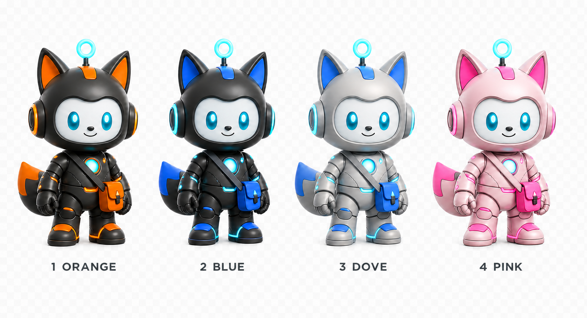

Build and ship applications
Turn a spoken product idea into research, requirements, code, tests, deployment steps, and status updates by connecting Orbit to your coding agents and developer tools.
Voice-first agent command center
Orbit stays at the front of your desktop, ready whenever you are. Speak naturally through Speechmatics, route work to your favorite AI models and agents, and turn one request into a complete multi-step workflow.
One voice. Any job.
Orbit is the friendly voice layer in front of your tools. Ask a question, launch a task, or describe an outcome. Orbit can hand the work to one agent or coordinate an entire pipeline behind the scenes.
Turn a spoken product idea into research, requirements, code, tests, deployment steps, and status updates by connecting Orbit to your coding agents and developer tools.
Summarize email, draft replies, prepare follow-ups, review calendars, update records, and trigger the backend services your team already uses.
Ask Orbit to investigate a topic, compare options, explain a document, surface urgent information, or turn a complex result into a spoken answer.
One request can fan out across specialist agents for research, planning, execution, quality checks, and delivery. Orbit stays visible, keeps you informed, and celebrates when the pipeline completes.
Connect OpenAI, Anthropic, local models, or your own private agent stack. Select the right model for each task without changing how you talk to Orbit.
Populate Orbit’s action menu with APIs, webhooks, automations, health checks, memory services, and workflows. Your existing systems become voice-accessible controls.
No command language required
End users do not need to write code or memorize commands. Builders connect the tools once; Speechmatics and Orbit make the experience conversational from then on.
“Review today’s email, reply to the urgent messages, and create follow-up tasks.”
Speechmatics captures the request while Orbit selects the configured model, agents, APIs, and pipeline steps.
Orbit keeps the conversation visible, performs waiting animations, reports progress, and returns the finished result.
Choose Solis in Classic Orange, Orbit in Electric Blue, Nimbus in Dove Gray, or Roisin in two-tone Rose Candy. Every expression, action, and waiting performance follows the selected character.
Orbit combines a polished desktop pet, a reusable web component, voice-ready events, and practical backend controls in one cross-platform companion.
Your agents stay yours
Orbit is model-agnostic. Connect a hosted model, a private model, a local model, or a team of specialized agents. Route different requests to different systems and let a workflow engine coordinate the handoffs.
Orbit becomes the consistent human interface: one character, one conversation, and one voice experience across every tool behind it.
As models, agent frameworks, and new technologies evolve, update the connections behind Orbit without forcing people to learn a new interface. Orbit provides one simple, consistent way to interact with AI—easy to recognize, configure, and extend.

Orbit is a plain Web Component, so the same files work in a static page, React, Vue, Svelte, or an existing dashboard. Use the hosted demo, embed the component, or install the always-on-top desktop edition.